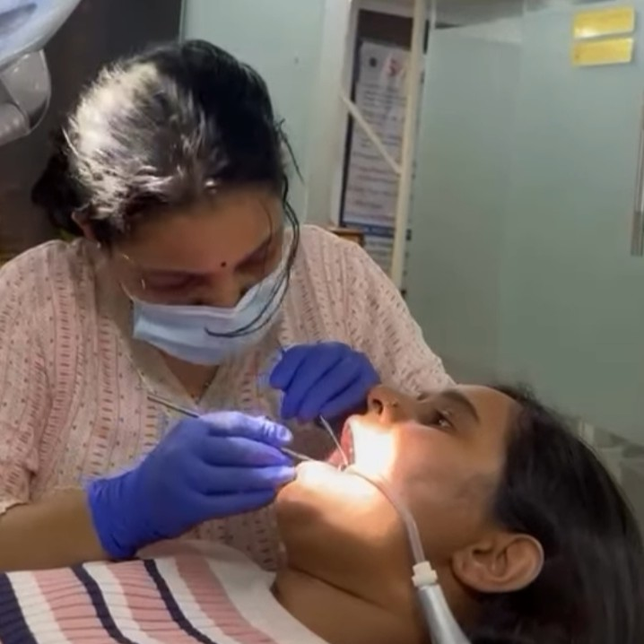
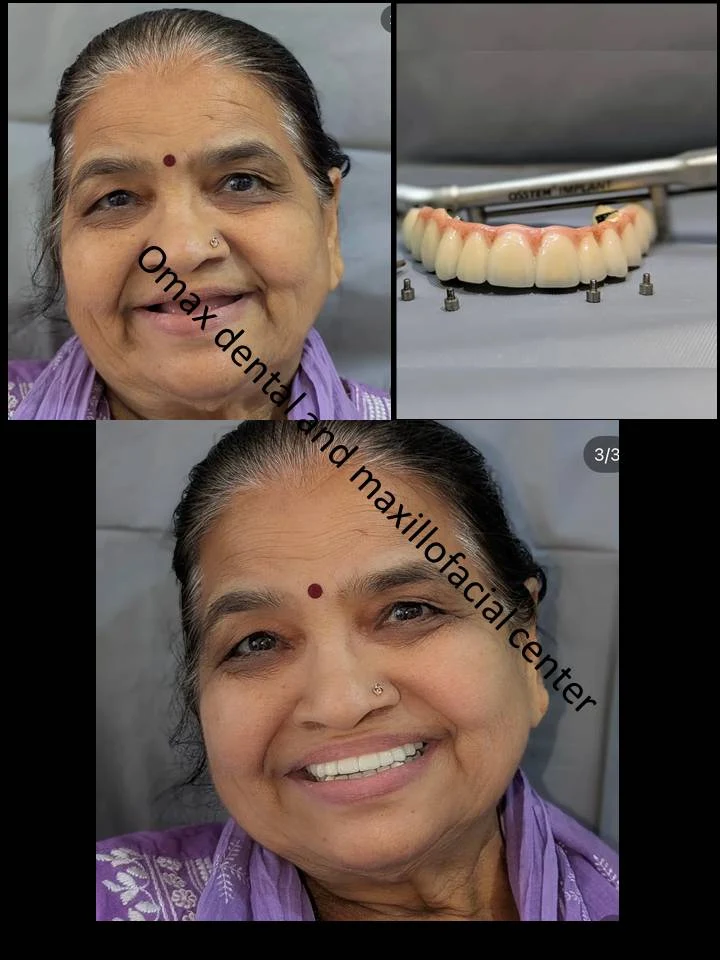
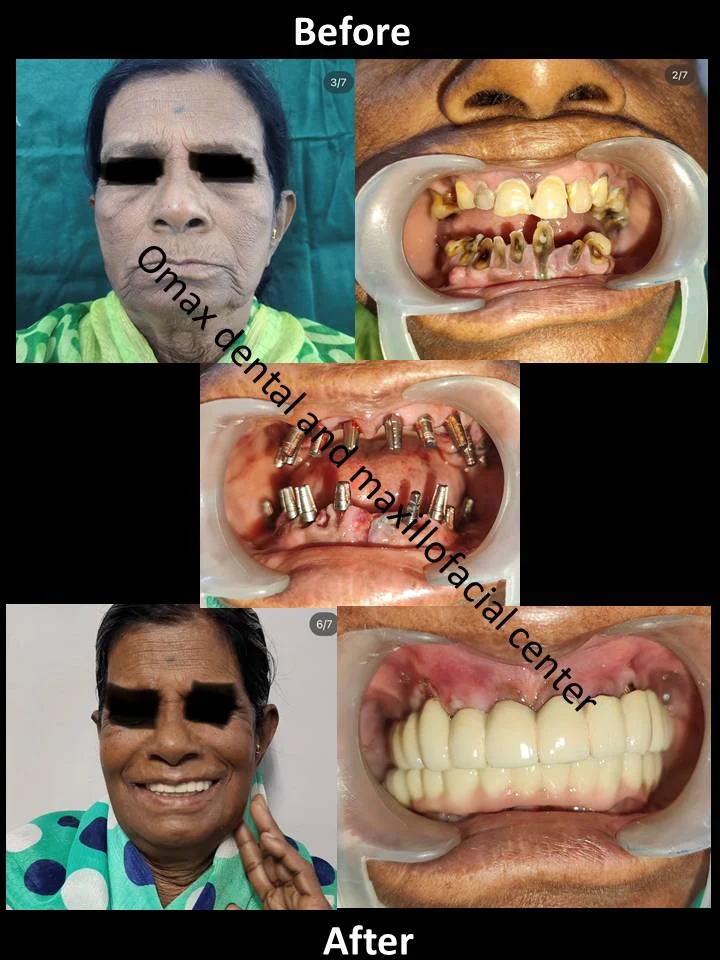
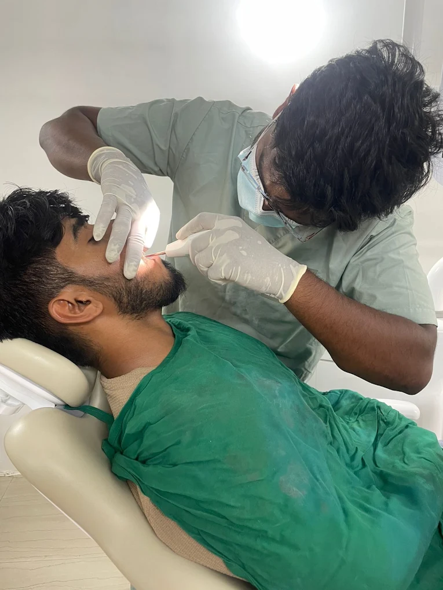
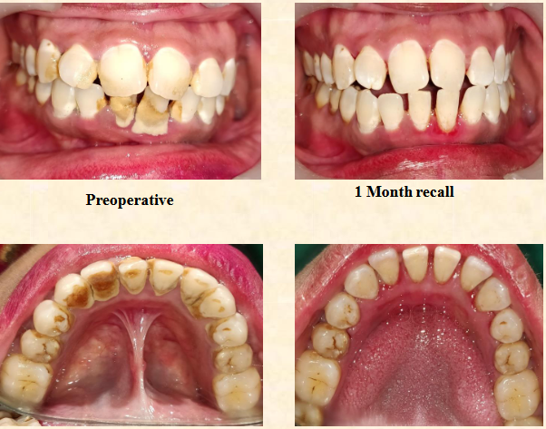
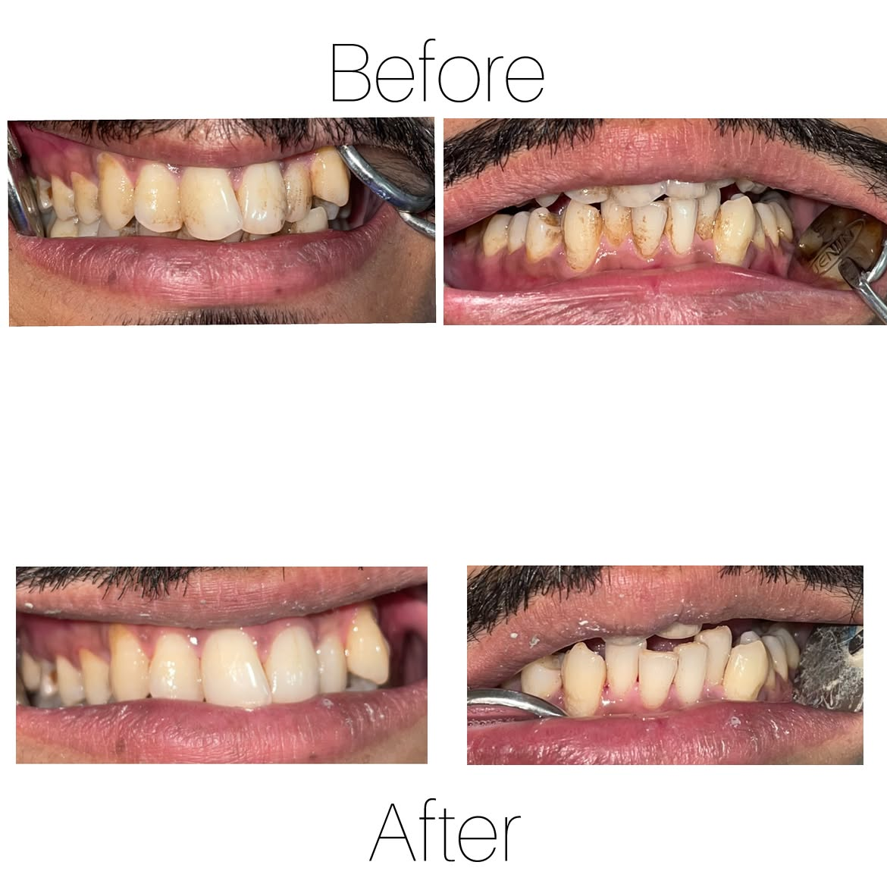

Premium Dental Care for Every Smile
Advanced Dental & Maxillofacial Care delivered with precision, compassion, and modern technology — in the heart of Vishal Nagar, Pimple Nilakh.

Care that feels considered, not rushed
Every detail, from sterilization to the first phone call, is built around one idea: you should always know exactly what's happening and why.
Experienced MDS Specialists
Every treatment plan is led by post-graduate specialists, not generalists — so the person treating you has trained specifically in that field.
Painless Dentistry
Modern anaesthesia protocols and a gentle touch mean most patients describe their visit as far more comfortable than they expected.
Advanced Digital Dentistry
Digital X-rays and precision diagnostics let us plan treatment accurately, with less guesswork and fewer visits.
Latest Equipment
The clinic is equipped with modern instrumentation maintained to current clinical standards, upgraded as technology moves forward.
Sterilization Standards
Strict, documented sterilization protocols are followed for every instrument, every patient, without exception.
Premium Patient Care
From the first call to the final follow-up, care is personal — you're treated as a patient, not a number on a schedule.
Honest Advice
You'll only ever be advised on treatment you actually need — explained clearly, with the reasoning behind it.
Personalized Treatment
No two smiles are alike. Every plan is built around your specific teeth, budget, and comfort level.
Comprehensive care, one trusted clinic
From routine cleanings to specialist surgical procedures — every treatment is planned and delivered in-house.

Dental Implants
Titanium root replacements for a permanent, natural-looking fix to missing teeth.
View Details
Root Canal Treatment
Save an infected or badly decayed tooth with gentle, modern root canal care.
View Details
Full Mouth Rehabilitation
A complete, staged plan to rebuild function and appearance across your entire mouth.
View Details
Smile Designing
A personalised cosmetic plan that reshapes your smile while keeping it natural.
View Details
Veneers
Thin, custom shells that correct shape, colour and minor gaps in a few visits.
View Details
Crowns & Bridges
Restore strength to damaged teeth or replace a gap without surgery.
View Details
Dentures
Comfortable, custom removable replacements for several or all missing teeth.
View Details
Tooth Extraction
Safe, gentle removal of a tooth that can't be saved or is causing problems.
View Details
Wisdom Tooth Removal
Expert surgical removal of impacted or troublesome wisdom teeth.
View DetailsSpecialists, not generalists
Two MDS-qualified specialists lead every case at Omax Dental, each focused on their own field of expertise.

Dr. Mahesh Pund
Oral & Maxillofacial SurgeonDr. Mahesh Pund leads surgical care at Omax Dental, with nine years dedicated to oral and maxillofacial procedures — from wisdom tooth extractions and…

Dr. Ashwini Jadhav-Pund
PeriodontistDr. Ashwini Jadhav-Pund specialises in the health of gums and the structures that support every tooth. With nine years of focused periodontal practice…
Real results from real patients
A glimpse at the clinic, our treatments, and the smiles we've helped along the way.






What patients are saying
“I put off my root canal for months out of fear. Dr. Pund made the whole procedure painless and explained every step. Genuinely the calmest dental visit I've had.”
“Got a dental implant done after years of avoiding it. The planning was thorough, the clinic is spotless, and the results look completely natural.”
“The smile designing consultation alone was worth it — they showed me exactly what to expect before committing to anything. Beautiful, honest work.”
“Had my wisdom tooth removed by Dr. Mahesh Pund. Quick, precise, and recovery was far easier than I'd braced myself for.”
“Dr. Ashwini treated my bleeding gums with so much patience. No pressure to over-treat — just clear, honest advice.”
“Full mouth rehabilitation changed how I eat and smile. The team at Omax mapped out every stage clearly from day one.”
Common questions, answered
The clinic is in Omkar Society, Laxmi Polyclinic, Vishal Nagar, Pimple Nilakh, easily reached from Wakad, Pimpri-Chinchwad and Pune.
We're open Monday to Saturday, 10:00 AM – 1:30 PM and 5:00 PM – 9:00 PM. We're closed on Sundays.
We do not currently offer emergency dental services. For urgent care, please contact your nearest emergency hospital.
Yes, we recommend calling or messaging us on WhatsApp first so we can plan enough time for your consultation.
The clinic is led by Dr. Mahesh Pund, an Oral & Maxillofacial Surgeon, and Dr. Ashwini Jadhav-Pund, a Periodontist — both BDS, MDS with nine years of experience.
Yes, Smile Designing and cosmetic treatments including veneers and whitening-adjacent procedures are offered after an in-person consultation.
Yes, dental implants are one of our core specialisations, planned and placed under the surgical expertise of Dr. Mahesh Pund.
Yes, we offer Pediatric Dentistry in a calm, patient-friendly environment suited to younger patients.
Both lead doctors have nine years of dedicated clinical experience and hold MDS specialisations in their respective fields.
We accommodate walk-ins where possible, but calling or WhatsApping ahead ensures shorter waiting time.
We regularly see patients from Pimple Nilakh, Vishal Nagar, Wakad, Pimpri-Chinchwad, Aundh, Baner, Hinjewadi and Balewadi.
Simply call +91 97632 36116 or message us on WhatsApp and we'll confirm a convenient slot for you.
Ready to book your visit?
Call or message us on WhatsApp — we'll find a time that works for you.